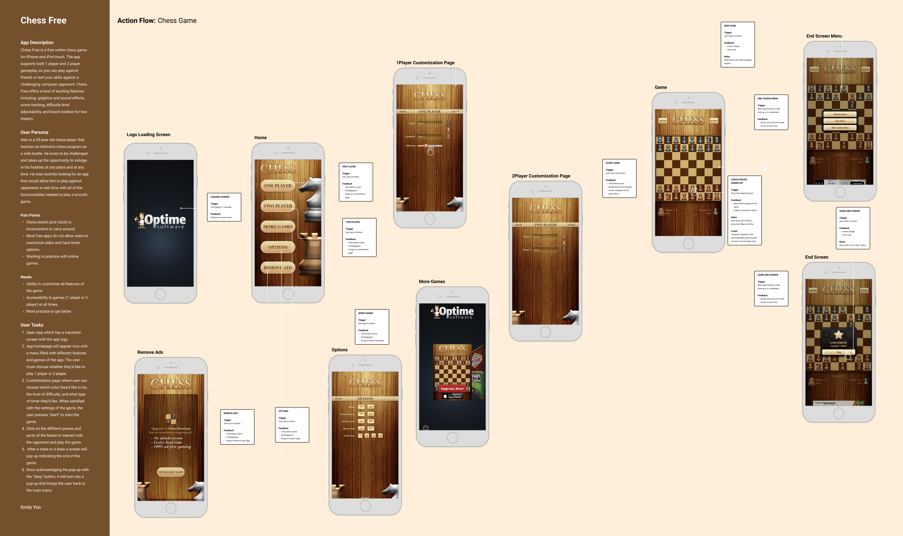
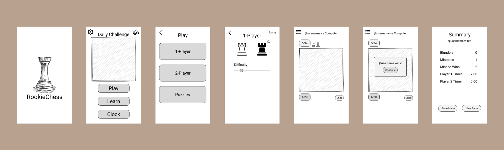

Lennox Got Lunch
OVERVIEW
For this project, we were tasked with solving a common problem—making food trucks more accessible and efficient for customers. We chose Lennox Got Lunch, a Vietnamese food truck known for its amazing Bahn Mi and other fresh, authentic menu items. Lennox is really popular with college students, university staff, and nearby workers, but they don’t have a digital ordering system. This often leads to long waits, confusion about menu availability, and missed opportunities to engage more with their customers.
Class:
Interaction Digital Media 213
Time Constraint:
10 Weeks (September 2024 – December 2024)
Programs:
Figma, After Effect, Illustrator
- UI/UX Design
- UX Research
- User Testing
- Branding

The Challenge
Working on this project came with a few key challenges that we had to navigate. First, the food truck serves a really diverse group of customers, including students, faculty, and visitors, all of whom have different needs. For example, students are usually short on time and want a super quick and easy experience, while other users might be less familiar with the menu and need more guidance. The food truck’s large menu also added complexity, as we had to figure out how to display everything clearly without overwhelming users. As a team, we faced some constraints, too. Everyone had packed schedules with classes, work, and other commitments, so managing our time, meeting consistently, and staying on track was a big focus. Some of us were working remotely, which meant we had to rely a lot on virtual communication tools to stay connected and make progress together. The timeline was another challenge. We had a limited amount of time to deliver a functional prototype, which meant we had to decide what was most important to prioritize. On top of that, not everyone on the team had experience with UX research or prototyping, so we had to learn a lot of new skills along the way, like usability testing and iterating on our designs. Despite all this, we stayed focused on our goals. We wanted to make an app that was easy to use and really efficient, especially for users who don’t have a lot of time. Features like quick ordering, real-time updates, and easy customization were a top priority because they could make the biggest difference for users. We also worked hard to make sure the app reflected the food truck’s identity and met both customer needs and practical constraints.
The Business
Lennox Got Lunch operates in a favorable market, being the only Vietnamese food truck on campus. Its banh mi sandwiches and fusion offerings are beloved by customers. This unique positioning provides a strong foundation to grow its customer base and expand its reach. To design an app that truly supported the food truck’s operations, we started by focusing on understanding the needs and limitations of the business. Our team used several research methods, including surveys targeting their customer base and on-site observations of how orders were managed during peak and slower hours. These methods gave us insight into their day-to-day challenges, like managing a diverse menu, accommodating customization requests, and handling unpredictable traffic patterns. One of our most important findings was how crucial real-time communication is for the food truck’s success. Menu items often change due to availability, and hours can shift unexpectedly. This made us realize that a live updates feature was non-negotiable for the app. It not only keeps customers informed but also reduces frustration from arriving and finding their favorite items unavailable. We also learned that the food truck’s competitors—other trucks on campus—were offering similar cuisines but lacked digital platforms. Most didn’t provide pre-order options or detailed customization tools, which gave us an opportunity to design a more competitive app. For example, the decision to add a searchable menu and a “favorites” feature was influenced by the need to stand out and simplify the user experience. There were challenges along the way. For instance, gathering consistent data on peak hours was difficult because traffic varied daily. It was also surprising to learn how much manual effort went into tracking orders and managing inventory. These insights informed our decision to make the app’s backend as straightforward as the front end, ensuring the food truck team could manage updates quickly and efficiently.
The Target Audience
To better understand our users, each team member conducted "fly on the wall" observations and in-depth interviews. These methods allowed us to gather valuable insights into user behavior, preferences, and pain points, which were crucial in guiding the design process. By observing and directly engaging with our target audience, we were able to learn how they interact with food trucks, what their challenges are, and what features they would find most useful in an app. Our primary users were identified as three key groups: college students, university employees, and nearby workers. College students are often looking for fast, affordable meals between classes and value portability and convenience. University employees, on the other hand, need quick lunch options during work hours and prioritize consistent quality and efficiency. Nearby workers, such as construction crews, require hearty, portable, and cost-effective meals to fit their demanding job schedules. Understanding the behaviors and frustrations of these groups was critical for designing an app that would meet their needs and provide a meaningful solution. Our user persona, Ava Pham, a third-year computer engineering student, is a perfect representation of a typical user. Ava is often busy with back-to-back classes and seeks to order a quick lunch ahead of time from Lennox so she can pick it up right after class. As a returning user, Ava is familiar with Lennox’s menu and the ordering process, so she expects a fast and efficient experience. Her pain points include the inability to order ahead on an app, uncertainty about menu availability, inefficiency in customizing orders, and a lack of order status updates. Ava also finds it inconvenient to place an order between classes, as she either has to interrupt her focus or risk longer wait times by ordering too late. Ava’s goals and expectations align with her pain points—she wants to efficiently place an order in advance, quickly order her favorite items with minimal browsing, and have an easy-to-navigate app with saved preferences. She expects accurate pickup timing to avoid waiting unnecessarily after class. These insights into Ava’s experience helped us focus on key features, such as pre-ordering, real-time updates, and fast navigation. Finally, we identified three main needs that were common among all user groups: fast service, affordable options, and the ability to order ahead and pick up. These needs were crucial in shaping the app’s design to ensure it meets the diverse demands of our audience, providing a seamless and convenient food truck experience.
Process
Our design process began with understanding the users’ needs and behaviors, which were crucial in shaping our app's functionality and user experience. We started by creating user flows to outline the path users would take to complete key tasks, such as placing an order, customizing a meal, and checking out.
Paper Prototype/Low Fidelity Wireframes
Next, we moved on to paper prototypes and low-fidelity wireframes to begin visualizing the user interface and layout. At this stage, the focus was on structure rather than detailed design. Our paper prototypes allowed us to quickly test and iterate on ideas. We would sketch basic wireframes and test them with each other to make sure the app's navigation was intuitive.
Moodboard + Branding

Our moodboards and branding decisions were integral to making the app feel both functional and visually appealing. Based on our research, we wanted the app’s aesthetic to feel modern, vibrant, and reflective of the food truck's Vietnamese culture. We used warm colors like red, orange, and yellow, which are associated with Vietnamese culture and also stimulate appetite. Additionally, we chose a clean and minimalistic design style to keep the app user-friendly and visually uncluttered. Typography was another key decision, and we chose fonts that felt modern and easy to read but also had subtle ties to traditional Vietnamese aesthetics.
Mid-fidelity Wireframes
As we progressed from the low-fidelity prototypes to mid-fidelity wireframes, we incorporated key insights from usability testing to refine our design. During this phase, we added more detail, such as buttons, icons, and basic colors, while focusing on enhancing usability based on user feedback. One major takeaway from testing was the need for faster navigation. Users expressed frustration with the time it took to place an order, so we redesigned the app to reduce the number of taps required to complete the ordering process. We implemented quick access to favorites and recent orders, allowing users to reorder their favorite meals with minimal effort. This streamlined navigation made it easier for users to quickly get to their desired items, especially for those in a rush between classes or during short breaks. Another critical insight was the simplification of customization options. Users found the previous customization flows of typing everything down confusing and time-consuming. To address this, we transitioned to button-based controls for meal customization, such as choosing specific ingredients. By providing users with clearly labeled and easy-to-use buttons, we made the customization process faster and more intuitive. This decision was driven by feedback from users who said they appreciated when customization options were clearly defined and easy to interact with. Usability testing also emphasized the importance of real-time updates. Users valued knowing the status of their order, so we made sure to highlight the real-time order status updates in the mid-fidelity wireframes. These updates were made more visible, ensuring users felt confident about the timing of their pick-up. Through these changes, the mid-fidelity wireframes became more user-friendly, faster, and easier to navigate, directly addressing the feedback we received during usability testing. These refinements ensured that the app not only met user expectations but also improved their overall experience with ordering from the food truck.
Solution
In transitioning to high-fidelity wireframes, we focused on enhancing usability and streamlining the user experience based on research and usability testing feedback. In addition to that, we prioritized incorporating microinteractions for a better user experience.
High-fidelity wireframes
We enhanced navigation and usability by making it easier for users to find and order their Beef Banh Mi. This was achieved by simplifying the menu layout, and introducing a 'View Cart' pop-up for quick order confirmation. These changes reduce the time spent searching and allow users to confirm their order quickly and efficiently. To improve customization and ordering, we implemented button-based options that allow users to make intuitive meal adjustments. We also made tipping selections more accessible and gave users the ability to set quantities to 0 for better control and clarity over their order. These refinements were made based on user feedback that showed a preference for clear and simple customization options. In the payment and checkout process, we simplified the flow by adding payment-specific pop-ups, clearer card input instructions, and a message about points. These updates ensure that the checkout process is straightforward, reducing confusion and streamlining the final steps of the ordering process. We also expanded features by adding a profile and favorites page. In the profile page, the user is able to access their rewards and edit any account details, card information, and order history. These additions expand the app's offerings and allow users to complete their orders more smoothly without unnecessary detours. These high-fidelity changes reflect the key feedback from usability testing and provide a more seamless, user-friendly ordering experience.
Takeaways
What Worked:
- Strong focus on user-centered design improved customer satisfaction.
- Efficient workflows enhanced the food truck's operations.
- New features, like real-time updates, solved major customer pain points.
If we had more time, our next steps would focus on refining and expanding the product. This could include:
- More Research: Conducting usability testing with a larger audience to gather feedback and refine the design.
- Improved Interactions: Polishing transitions, animations, and micro-interactions to enhance the user experience.
- Additional Features: push notifications for special offers and enhanced analytics for the business.
This project was very much a projection of myself as a Chess player and my struggles when searching for a redeeming mobile application with all my desired customization functions. I am overall proud of the work I’ve done considering it was my first experience using After Effects and animating my own micro-interactions. I also branched out of my usual style of graphics to focus on clean, minimalistic design that were more user-centered.
This final design showcases how thoughtful planning and user-focused problem-solving can benefit both customers and businesses. For users, the app provides a smoother, more convenient experience—from placing orders to reducing wait times and ensuring they can access their favorite meals without hassle. For the business, it helps streamline operations, improve order accuracy, and provide tools to better connect with and grow their audience. As a team, we learned the importance of clear communication and flexibility throughout the semester. Balancing individual strengths while keeping a shared vision allowed us to create a cohesive product that meets user and business needs. From this project, we’ve also learned the value of step-by-step design—how starting with small, testable ideas and building on them leads to stronger final results. These lessons will guide us in future projects, ensuring that we keep users at the center of our work while staying organized and collaborative. The Lennox Got Lunch app prototype highlights the impact of focusing on real user needs. By addressing challenges like simplifying the ordering process and reducing wait times, the app delivers a solution that works for both customers and the business. It streamlines the customer experience, making it easier to place orders and enjoy their meals, while also helping the business manage operations more efficiently and reach a wider audience. This project demonstrates how clear, user-centered design can solve practical problems and support the growth of a local business in a meaningful way.